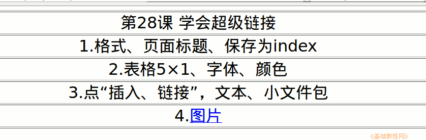

2011-2012 第二学期七年级文字处理和网页教学设计
作者：TeliuTe 来源：基础教程网
二十八、学会超级链接 返回目录 下一课
（一）教学设计
1、学习目标：学会超级链接
2、注意事项：把自己文件夹里的检查一下，都放在一起归类。
3、教学过程：
1）教师准备学案和板书；
2）学生整队进入，开机抄黑板上笔记；
3）教师讲解板书演示操作；
4）学生打指法、日志、完成操作；
5）教师打勾记录学生指法成绩，检查日志和操作；
注：学生抄完笔记就开始打指法、日志，老师讲完后再继续完成；
（二）板书设计(学生笔记)
第28课 学会超级链接
1、格式、页面标题、保存为 index
2、表格、5×1，字体、字号、颜色
3、点“插入－链接”，文本、小文件包
*4、图片、images(操作)，保存、浏览
操作图示：

（三）课后记 2012-6-14 23:37
这周开始只上一节课，七年级的这节上
不知道有没有必要，期末考试弄这么紧张
--
或者是用降低信技来提高文化课
其实踩低别的算什么，把自己提高才是真本事
--
下午第一节课前停电了，真是会找时间停电
到班里守着上自习，班主任找了个音箱放些音乐
--
早上教研活动，年级组长就来说学生浮躁
能否去多媒体室让看动画片，想想也可以
--
可是说让我带着去，这个不太合适了
那学生还不吵着上网玩游戏的，学简单些多留些时间放松下
--
前两个班都在班里自习了，学生果然是有些浮躁的
也不用管太多，自己做题说话也不必管太严
--
把内容省略一下，只让做一个超级链接即可
其他都是前面的内容复习，相对要简单多
--
学生也习惯，并没多吵着玩
只是一门心思想着快快做出来，然后开网去玩
--
4班最后一节，没心思听内容，还有几个爱说话的
结果做的时候就卡壳，让问同学自己绕弯
--
每次单独讲惯成毛病了，才发现这个情况
一开始做就问，前面讲解的时候没认真记
--
有的没有图片网页，让链接别的，绕过弯来就好
好像小学接触过，有空把小学的教材看看才好
--
返回目录 下一课
本教程由86团学校TeliuTe制作|著作权所有
基础教程网：http://teliute.org/
美丽的校园……
转载和引用本站内容，请保留版权信息和本站链接。